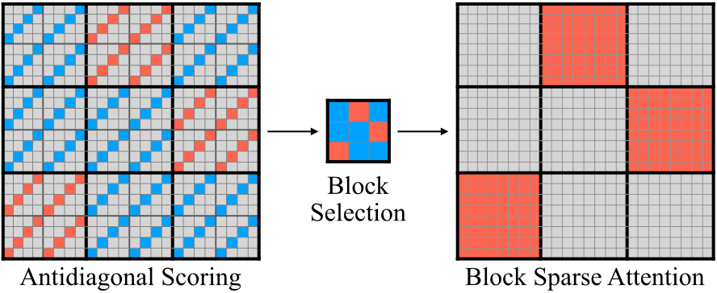
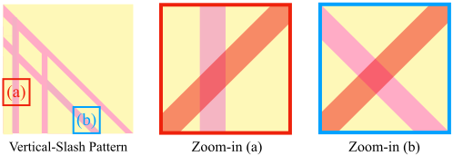
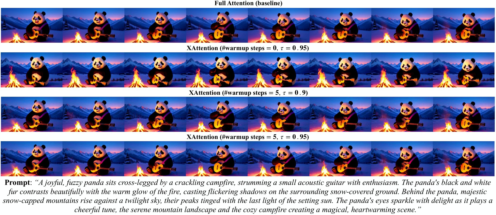
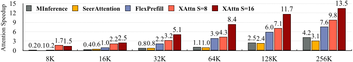
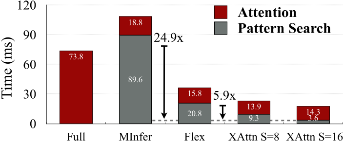

XAttention：用反对角线给注意力块打分的块稀疏注意力
XAttention: Block Sparse Attention with Antidiagonal Scoring
阅读状态、进度与收藏只保存在你的浏览器里。
逐节精读
这部分按论文的章节顺序，用本站自己的话把整篇论文从头讲一遍。读懂某个概念需要的背景知识，会在第一次用到它之前单独讲清楚（青色框）。每个结论都尽量说出“因为什么、所以什么”。论文的 arXiv 版以 CC BY 4.0 许可发布，所以原图直接放在讲到它的地方，并说明这张图怎么看；原图没画到的概念，用本站的示意图补上。标“推算”的数字是本站根据论文数据、官方代码或公开的模型配置算出来的，不是论文原话。本页以 arXiv v1（2025-03-20，也是 arXiv 上唯一的版本）为主线；ICML 正式版（PMLR 267）在实验部分有增改：表 1 的 SeerAttention 一行换了数字，新增了端到端加速表和精度–稀疏度权衡图，附录加了 Wan2.1 视频生成和另外三个语言模型的 RULER 结果，后面的图表编号因此顺延一位。正式版独有的内容只以文字和数字转述，在对应位置单独标出。每节末尾有英文原文的链接。
0 导读：这篇论文解决什么问题
大模型读一段长输入时，第一步叫预填充：把整段输入一次性送进模型，算出每个位置的 key、value 和第一个输出 token。注意力要让每个位置和它前面的所有位置两两打分，所以计算量随输入长度的平方增长：输入从 8K 变成 128K，长度变成 16 倍，注意力的计算量变成 256 倍。到了十几万 token，预填充的大部分时间都花在注意力上，用户要等很久才看到第一个字。视频模型更甚：HunyuanVideo 生成一段 720p、129 帧的视频，每一步去噪都要在约 12 万个 token 上做注意力（推算，见 §5.4）。
一个自然的省法是块稀疏注意力：把注意力矩阵切成 128×128 的块，只算重要的块，其余整块跳过。GPU 内核早就支持这种算法，真正的难点在于：要跳过哪些块，必须在算注意力之前就知道；而判断“哪些块重要”本身也要花时间。前人的估计办法要么不准（把一块 token 平均成一个向量再打分，会把细线状的重要位置抹平），要么太慢（在 8K 输入上，估计加计算的总时间比直接算全注意力还长好几倍）。
XAttention 的办法很简单：把注意力矩阵按步长 \(S\) 切成小格，每个小格只取一条反对角线（从左下到右上）上的分数，平均之后当作这个小格的分数，再汇总成块的分数。反对角线和注意力图里两种最常见的结构——竖线（所有 query 都看同一个 key）和斜线（每个 query 都看往前固定距离的 key）——都会相交，所以能以很小的代价把它们找出来。打完分之后，每一行块按分数从高到低累加，加到总量的 \(\tau\)（比如 90%）为止，选中的块交给块稀疏内核去算。整个方法不需要训练，可以直接套在已有的模型上。
论文报告的主要结果：在 Llama-3.1-8B-Instruct 上，RULER 平均 88.47（全注意力 87.52），LongBench 平均 40.60（全注意力 40.34）；Qwen2-VL-7B 在 Video-MME 上和全注意力相差不到 0.5 分；HunyuanVideo 生成的视频和全注意力版本相比 PSNR 最高 23.5；注意力这一个算子在 256K 输入上最快 13.5 倍。ICML 正式版补充了端到端的预填充加速：256K 时 5.12 倍。后面会看到，这些数字各有各的测量条件，不能放在一起直接比。
读完这部分，你应该能回答这几个问题：
- 预填充为什么在长输入时被注意力主导？这和解码阶段有什么不同？
- 块稀疏注意力为什么能真正变快，前提是什么？
- 为什么“反对角线上的和”能代表一整块的重要性？它比池化好在哪里，又有什么盲点？
- 按阈值选块和固定选 k 块有什么区别？\(\tau\) 控制的到底是什么？
- 13.5 倍、5.12 倍、“超过全注意力”这些数字分别是在什么条件下测出来的，可信到什么程度？
- 它和 NSA、MoBA 这些“训练时就稀疏”的方法是什么关系？
1 引言：长输入的预填充为什么慢，块稀疏为什么一直没兑现
论文的引言先描绘了需求：大模型正在从纯文本走向多模态，长视频理解要把一小时的画面变成 token 序列，视频生成要一次产出成百上千帧，作者设想的是能连续交互一整天的多模态助手和能生成数小时连贯视频的“世界模拟器”。这些场景的共同点是 token 数量巨大，而注意力的代价随序列长度平方增长，在预填充阶段形成严重的瓶颈。下面先把这笔账算清楚。
1.1 预填充的账：注意力什么时候成为大头
大模型处理一个请求分两个阶段。预填充（prefill）把用户输入的全部 \(N\) 个 token 一次性送进模型，每一层都对这 \(N\) 个位置同时计算，产出它们的 key、value（存进 KV 缓存）和第一个输出 token。解码（decode）在这之后每一步只处理一个新 token。预填充是“很多 token 同时算”，矩阵乘法的规模很大，GPU 的算力能用满，所以它的耗时基本由计算量决定；解码每一步只算一个 token，耗时主要由读显存的速度决定。两个阶段的详细对比见本站 vLLM 精读 §2.2。用户感受到的“首字延迟”（TTFT），主要就是预填充的时间。
预填充的计算量分两部分。一部分是线性层（QKV 投影、输出投影、前馈网络）：每个 token 都要和全部参数乘一遍，大约是 \(2P\) 次浮点运算（\(P\) 是参数量），总量和 \(N\) 成正比。另一部分是注意力：每个位置要和它之前的所有位置算点积（\(QK^\top\)），再按权重把 value 加起来（乘 \(V\)），总量和 \(N^2\) 成正比。
以论文主要用的 Llama-3.1-8B 为例：它有 32 层，隐藏维度 4096，除去词表之外约 70 亿参数。代入上式，注意力的系数是 \(2\times32\times4096=262{,}144\)，线性部分的系数约为 \(1.4\times10^{10}\)，两者在 \(N\approx5.3\) 万时相等（推算）。输入再长，注意力就成了大头。下图是按这个公式算出的注意力占比。
这张图说明了两件事。第一，只加速注意力，在短输入上收益很小：8K 时注意力只占约 13% 的计算，就算把它变成零，整体也只快约 15%（推算）。第二，到了 128K、256K，注意力占七八成，这时候省注意力才真正值得。XAttention 的全部改动都在预填充的注意力上，线性层和解码阶段完全不动。
1.2 块稀疏注意力：要么整块算，要么整块跳过
softmax 之后，一个 query 对所有 key 的注意力权重加起来等于 1。在长输入里，这些权重通常高度集中：大部分权重落在少数位置上，比如开头几个 token（StreamingLLM 称之为“注意力汇聚点”，attention sink）、最近的几十个 token，以及和当前内容相关的几段文字；其余成千上万个位置的权重几乎为零。把这些近乎为零的位置跳过不算，结果几乎不变，这就是稀疏注意力的出发点。
但“跳过”在 GPU 上要按块来做才省时间。FlashAttention 把 \(Q\)、\(K\)、\(V\) 切成固定大小的块（比如 128 个 token 一块），每次把一块 query 和一块 key / value 搬进片上存储，用 Tensor Core 做一次规整的小矩阵乘法。如果要跳过的位置东一个西一个，每块里还是得照算；只有当一整块（128×128 个 query–key 对）都可以跳过时，内核才能直接不读这块 K/V、不做这次乘法。这种“给每个块一个开关”的做法叫块稀疏注意力，FlashAttention 原论文就给出了块稀疏的版本（见本站 FlashAttention 精读 §6）。它的耗时大致和“被算的块数”成正比，所以论文用密度（density，算了的块占因果下三角全部块的比例）来衡量省了多少：密度 10%，注意力的计算量就约为原来的十分之一。
XAttention 用的稀疏内核是 MIT HAN Lab 自己的 Block-Sparse-Attention 库（论文引用为 Guo et al., 2024）。这个库在 FlashAttention 2.4.2 的基础上修改而来，块大小固定为 128，允许每个注意力头用不同的块掩码。所以 XAttention 本身不写新的注意力内核，它要做的只是：为每个头、每一行块，决定哪些块打开。
1.3 难点在“先知道哪些块重要”
块稀疏的难处在于先后顺序：要跳过一个块，就得在算它之前知道它不重要；而“一个块重要不重要”，严格说要把这块的注意力分数算出来才知道。所以所有动态块稀疏方法都分三步：先用某种便宜的办法估计每块的重要性，再按估计结果选块，最后只计算选中的块。
这带来一个两头的约束。估计如果太粗，会漏掉真正重要的块，模型就会答错；估计如果太细，估计本身就要花接近全注意力的时间，省下的计算又被吃掉了。论文的判断是，已有的方法在这两头都没做好，于是它在引言里提出的问题是：能不能做一种块稀疏注意力，既大幅加速长上下文 Transformer，又不损失精度？

2 方法（一）：用反对角线给块打分
2.1 前人怎么估计：池化与竖线–斜线搜索
把一个注意力头在长输入上的注意力矩阵画成图（行是 query、列是 key，越亮表示权重越大），常能看到两种结构。竖线（vertical）是某一列从上到下都很亮：后面所有 query 都在看同一个 key，比如开头的汇聚点、分隔符，或者全文的关键句。斜线（slash）是平行于主对角线的一条亮线：每个 query 都在看“自己往前固定距离”的那个 key，最典型的是主对角线附近（看最近的几个 token），也可能出现在更远的固定距离上。MInference（NeurIPS 2024）把很多注意力头的形状归纳为“竖线 + 斜线”（vertical-slash），另外还有 A 形和块状两种。
这两种结构的共同点是细：在一个 128×128 的块里，一条竖线只占 1 列，一条斜线最多占 128 个格子，都不到全块 16,384 个格子的 1%。可它们承载的权重可能很大。所以一个好的估计方法，必须能“看见”这些细线。
论文指出了两类前人做法的不足。
- 池化。把一块 query 取平均、一块 key 取平均，两个平均向量做一次点积，作为这一块的分数。这非常便宜，但平均会把细线稀释掉：一条竖线在 128 个 key 里只占 1 个，平均之后它的贡献只剩约 1/128。论文说它的消融实验表明，只靠平均池化或求和池化预测不准，尤其当块里只有少数几条重要的竖线或斜线时。不过论文给出的消融表里并没有池化这一组，只有随机、对角线和反对角线三种采样的比较（§5.6）。
- 竖线–斜线搜索。MInference 和 FlexPrefill 取输入最后一段 query，用它们和全部 key 算出真实的注意力分数，再沿列求和找竖线、沿对角线求和找斜线，选出分数最高的若干条。FlexPrefill（ICLR 2025）还会先用 JS 散度判断一个头适合“按 query 动态估计”还是“套用竖线–斜线这种预设形状”，选多少位置则按累计注意力达到阈值 \(\gamma\) 来定。论文指出这类做法有两个问题：重要的模式不一定在最后一段 query 里出现（比如文档中间的一段只被中间的 query 关注）；而且搜索本身很慢，§5.5 的耗时拆分会看到它可能比注意力本身还慢。
2.2 反对角线打分：具体怎么算
XAttention 的做法是：把注意力矩阵按步长 \(S\) 切成 \(S\times S\) 的小格（每个 128×128 的块里有 \((128/S)^2\) 个小格）；在每个小格里只取一条反对角线上的 \(S\) 个分数，也就是从小格左下角到右上角那一条，把它们平均。写成公式，第 \(I\) 行、第 \(J\) 列小格的分数是
这里 \(q_i\)、\(k_j\) 是第 \(i\) 个 query、第 \(j\) 个 key，\(d\) 是每个头的维度，\(1/\sqrt{d}\) 是注意力本来就有的缩放。下标 \(IS+S-1-t\) 随 \(t\) 增大而减小，\(JS+t\) 随 \(t\) 增大而增大：行往上走、列往右走，正好是从左下到右上的一条线。再除以 \(S\)，意味着 \(s_{IJ}\) 是这条线上 \(S\) 个原始注意力分数（softmax 之前的 logit）的平均。下一节会看到，这些平均分数再做一次 softmax，就得到一张缩小了 \(S\times S\) 倍的“近似注意力图”，一个块的重要性由块内所有小格汇总而来。这个式子是本站按论文算法 1 和官方代码整理的，论文正文只用文字和原文图 1 描述。

2.3 为什么反对角线管用：论文的两个理由和本站的补充
论文给出两个理由。
- 信息不丢。在每个 \(S\times S\) 小格里，反对角线恰好经过每一行一次、每一列一次。所以每个 query 和每个 key 都参与了打分，不会有哪一行、哪一列被完全忽略。
- 模式能被检测到。反对角线和块内任何一条竖线、任何一条斜线都相交（原文图 2）。竖线是纵向的，斜线是从左上到右下的，而反对角线是从左下到右上的，方向和两者都不同，所以一定会碰上。
本站再补一个更定量的角度，解释它为什么比池化好（这是本站的解释，论文没有这样写）。设想一个块里有一条很强的竖线：某一个 key 和所有 query 的点积都比其他 key 高出很多。
- 块平均池化，相当于把块内 \(B\times B\) 个分数平均成一个数（\(\bar q^\top\bar k\) 恰好等于块内所有 \(q_i^\top k_j\) 的平均）。竖线只占其中 \(B\) 个格子，贡献被稀释为 \(1/B\)；\(B=128\) 时只剩 1/128。
- 反对角线在每个小格里取 \(S\) 个分数平均，竖线经过的小格里恰好有一个被采到，贡献只被稀释为 \(1/S\)。\(S=8\) 或 16 时只稀释 8 倍或 16 倍，比池化轻了 8 到 16 倍。而且块内每一行小格都会采到这条竖线一次，后面把小格分数加成块分数时，这些信号会一起累积。
举个数字例子（本站构造）。设一个 128×128 的块里有一条竖线，这一列的 logit 比块内其他位置高出 \(\Delta=8\)（已经过 \(1/\sqrt d\) 缩放）。池化看到的平均分只比一个“完全平淡”的块高 \(8/128\approx0.06\)，取指数之后只是 1.06 倍，几乎分辨不出来。反对角线（\(S=16\)）在竖线经过的小格里看到的平均分高出 \(8/16=0.5\)，取指数后是 1.65 倍；这个块的 8 行小格每一行都会得到这个加成，块分数里这一部分就被放大了。真实注意力里，这一列的权重是其他位置的 \(e^{8}\approx2981\) 倍，两种估计都远远低估了它，但反对角线至少保留了“这里有东西”的信号，排序时能把这个块排到前面。
同样的道理也说明 \(S\) 不能太大：\(S=64\) 时每条线被稀释 64 倍，一个 128×128 的块里也只剩 2×2 个小格，打分越来越接近池化。§5.6 的消融里，\(S=64\) 的精度明显下降。
- “一定相交”是连续几何里的说法，在格点上并不严格成立。本站推导：反对角线采到的格子 \((i,j)\) 都满足 \(i+j=(I+J)S+S-1\)；当 \(S\) 是偶数（论文用的 4、8、16、64 都是偶数），\(i-j=(i+j)-2j\) 一定是奇数。也就是说，一条只有一格宽、偏移为偶数的斜线（上图虚线），反对角线一次也采不到。实际影响有限：对角块总是被强制保留（§3），而真实注意力图里的斜线通常有好几格宽，相邻的奇数偏移会被采到。但论文“不会漏掉任何斜线”的说法，在格点层面只对一半的偏移成立。
- 对角线采样是个反面例子。它和斜线平行：一条斜线要么整条落在采样线上（分数很高），要么完全错过（分数为零），估计的波动很大。§5.6 的消融里，对角线采样的 RULER 平均分是 81.06，反对角线是 88.47（\(S=8\)）。
3 方法（二）：按阈值选块，以及它在代码里怎么一次算完
3.1 从反对角线分数到“近似注意力图”
论文的算法 1 对每一行小格（对应 \(S\) 个连续的 query），在这一行所有小格上做 softmax：
这就是一张缩小版的注意力图：原来每个 query 对每个 key 有一个权重，现在每 \(S\) 个 query 对每 \(S\) 个 key 有一个权重，而且每行加起来等于 1。把一个 \(B\times B\) 块里的 \((B/S)^2\) 个 \(\hat a_{IJ}\) 加起来，就是这一块的估计注意力质量 \(\hat A_{bc}\)（\(b\) 是 query 块号，\(c\) 是 key 块号）。同一个 query 块对所有 key 块的估计质量加起来等于 \(B/S\)。
注意这里的先后顺序：先把 \(S\) 个 logit 平均，再做 softmax。真实的块注意力质量是“先对每个 logit 做 softmax，再求和”。两者在数值上并不相等，前者只是一个用来排序的代理分数。论文也没有声称两者相等，它需要的只是“重要的块分数高”。
3.2 阈值选块：累计到 τ 为止
选块规则是：对每一行块，把各块的估计质量从大到小排序，依次加入，直到已加入的块的质量之和达到这一行总质量的 \(\tau\)。论文把它写成：
意思是：在所有“质量之和不少于 \(\tau\)”的块集合里，找块数最少的那个。因为是按分数从大到小贪心加入，得到的恰好就是这个最小集合。
如果你熟悉语言模型的采样，这和 top-p（核采样）是同一个思路：top-k 每次固定取概率最高的 k 个候选，top-p 取“概率加起来达到 p 为止”的最少候选。分布集中时 top-p 取得少，分布分散时取得多。放到注意力上，有的头只盯着少数几个位置，有的头看得很散；同一个头在 4K 输入和 128K 输入上，需要的块数也完全不同。固定块数（top-k）或固定比例（top-ratio）都没法同时照顾这些情况，阈值则能自动适应。
阈值还有一个好处：它直接控制被丢掉的那部分注意力。设真实注意力里被跳过的权重总和是 \(\varepsilon\)。块稀疏内核只在选中的位置集合 \(\mathcal S\) 上做 softmax，相当于把剩下的权重重新归一化：\(\hat o=\sum_{j\in\mathcal S}a_jv_j/(1-\varepsilon)\)，而真实输出是 \(o=\sum_j a_jv_j\)。两者之差等于 \(\sum_{j\notin\mathcal S}a_jv_j-\frac{\varepsilon}{1-\varepsilon}\sum_{j\in\mathcal S}a_jv_j\)，两项的长度各不超过 \(\varepsilon\max_j\|v_j\|\)，所以（本站推导）
也就是说，只要跳过的权重少，输出就偏不远。\(\tau=0.9\) 的直觉含义是“只允许丢大约一成的注意力”。但要记住，\(\tau\) 是设在估计质量上的，真实丢掉的比例取决于估计准不准；而且这个界是对一个 query 而言的，误差还会逐层传递。
- 块大小 \(B\) 在代码里固定为 128（有断言检查），批大小只支持 1。
- 选块时，第一个 key 块和每一行的对角块总是保留，其余块按估计质量排序累加；阈值是相对于这一行总估计质量的比例。论文的算法 1 没有写这两个强制块。
- 估计和选块对每个 query 头单独做：GQA 模型的 key / value 头先被复制到和 query 头一样多（Llama-3.1-8B 是 8 个 KV 头复制成 32 个），所以同一组里的头可以选不同的块。预填充受算力限制，这样做问题不大；这和 NSA 为解码强调的“组内共享选择”是两回事（见 §6）。
- 只有 GPU 名称里带“100”（如 A100、H100）时才走 Triton 实现，否则退回 PyTorch 实现。
- 解码阶段直接调用 FlashInfer 的全注意力，不做任何稀疏。
3.3 一次矩阵乘法算出所有反对角线和（算法 1）
如果逐个小格去取反对角线上的元素再相加，在 GPU 上会很慢。算法 1 用了一个重排技巧，把所有小格的反对角线和变成一次矩阵乘法：
- 把 key 按步长分组：第 \(J\) 组是 \(k_{JS},k_{JS+1},\dots,k_{JS+S-1}\)，按顺序首尾拼成一个长度为 \(S\cdot d\) 的长向量 \(\tilde k_J\)。
- 把 query 也按步长分组，但组内倒序拼接：\(\tilde q_I=[\,q_{IS+S-1},\,q_{IS+S-2},\dots,\,q_{IS}\,]\)。
- 两个长向量的点积 \(\tilde q_I^\top\tilde k_J=\sum_t q_{IS+S-1-t}^\top k_{JS+t}\)，正好是小格 \((I,J)\) 的反对角线和。把所有组一起算，就是一个 \((N/S)\times(Sd)\) 的矩阵乘一个 \((Sd)\times(N/S)\) 的矩阵。
3.4 估计本身要花多少（推算）
这个乘法的计算量是 \((N/S)^2\cdot Sd=N^2d/S\) 次乘加，是完整 \(QK^\top\) 的 \(1/S\)。完整注意力除了 \(QK^\top\) 还有乘 \(V\) 的一半，所以估计用的矩阵乘法约占全注意力矩阵乘法的 \(1/(2S)\)：\(S=8\) 时约 6.3%，\(S=16\) 时约 3.1%（推算）。此外还要对 \((N/S)^2\) 个分数做 softmax 并按块求和，这部分以访存为主。官方实现把乘法写成一个 Triton 内核（因果时跳过上三角的小格），把 softmax 和块内求和融合成另一个内核，并把 query 分段（chunk）处理以控制显存。
和 §5.5 的耗时拆分对照：在论文测的那个长度上，全注意力 73.8 ms；XAttention 的估计（论文称“模式搜索”）在 \(S=8\) 时 9.3 ms、\(S=16\) 时 3.6 ms，分别约为全注意力的 12.6% 和 4.9%（推算）。这比纯矩阵乘法的比例高，多出来的就是 softmax 和读写分数矩阵的开销。
4 方法（三）：给每个头找一个尽量小的阈值
论文把它写成一个动态规划。模型共有 \(H\) 个注意力头（指全部层的头），定义 \(D[h][m]\) 为“在前 \(h\) 个头上总共做了恰好 \(m\) 次阈值调整之后，能达到的最好性能”，递推式为
其中 \(P(h,m)\) 是在 \(D[h-1][m-1]\) 对应的状态上，把第 \(h\) 个头的阈值再降一档之后的模型性能。每降一档就把阈值乘以 0.9：
按这个规则，一个头的阈值只能取 0.9、0.81、0.729、0.656……这些值：每调整一次，就少保留约一成的估计质量。实验里从 \(\tau=0.9\) 出发，允许 \(M=1000\) 次调整，最后得到的阈值平均约 0.8。论文强调这一步不是必需的，它只是能在精度不变的前提下进一步提高稀疏度。
这段描述有几处没有交代：“性能” \(P\) 是在什么数据上、用什么指标测的；每次评估都要跑一遍模型，1,000 次调整乘上全部头数要跑多少遍；递推式本身也更像一个“按头依次决定降不降”的贪心过程，而不是严格意义上的动态规划。官方仓库没有发布这个搜索的代码，只发布了搜索结果：Llama-3.1-8B 每层每头一个阈值的三张表，分别对应 \(S=4、8、16\)。仓库在 2025 年 6 月另外补了一个“阈值标定”脚本，做法和论文描述的不同：用一批长文档问答提示跑全注意力（本站抽看了第一段，用的是 LongBench 多文档问答的提示模板），对每个头找出“覆盖真实注意力 90% 的那些块”在估计分数上对应的比例，再在所有样本上取最大值。
xattn/threshold/llama_threshold.py 里的 llama_fuse_8，按层平均由本站计算。三张表的总体平均：\(S=4\) 约 0.79，\(S=8\) 约 0.76，与论文说的“平均约 0.8”相符；\(S=16\) 约 0.91（推算）。表里有不少大于 0.9 的值（最大 0.96），所以这些表并不完全是“从 0.9 出发、每次乘 0.9”得到的；本站无法确认论文的表格用的就是这几张表。这张图有两个值得注意的地方。第一，阈值随层数变化很大：最浅的几层平均只有 0.4–0.5，中间层接近 0.9，说明浅层的很多头可以非常稀疏。第二，\(S=4\) 和 \(S=8\) 的表里各有 28 个头的阈值是 0（都在第 0、1、2、6 层）。按官方代码，阈值为 0 的头只算第一个块和对角块，相当于块粒度的“只看开头和最近”。这和同一作者此前的 DuoAttention 把一部分头改成“只看开头和最近”的流式头，是同一个观察：有相当一部分头根本不需要看全文。
5 实验：精度丢了多少，速度快了多少
5.1 实验设置
模型。文本用 Llama-3.1-8B-Instruct（原生上下文 128K）；视频理解用 Qwen2-VL-7B-Instruct；视频生成用 HunyuanVideo（130 亿参数以上的扩散 Transformer）。正式版附录另外报告了 Mistral Nemo 12B、Phi-3.5 Mini 3.8B、Qwen2.5 7B 的 RULER 结果，以及 Wan2.1 的视频生成结果。
对照方法。全注意力基线是 FlashInfer 框架里实现的 FlashAttention（论文没写版本）。稀疏对照有三个，论文说都严格按公开实现运行：MInference 用官方配置，所有头都用竖线–斜线模式；FlexPrefill 取 \(\gamma=0.95\)、\(\tau=0.1\)，这是其原论文里精度最高的一组参数；SeerAttention 先训练了它的门控参数。
SeerAttention（2024）是“半训练”的块稀疏：模型本身冻结，另加一个小门控，把一块 query 和一块 key 池化后经过可学习的线性层，再相乘得到块分数；门控用自蒸馏的方式学习全注意力的块级分布。它介于完全免训练（XAttention、MInference、FlexPrefill）和从头训练（NSA、MoBA）之间。
RULER 是合成的长上下文基准：在可调长度的填充文本里埋“针”，考察检索、多跳追踪、聚合等能力，长度可以从 4K 设到 128K。合成任务的好处是长度可控，缺点是和真实使用有距离。LongBench 是真实任务集合（单文档问答、多文档问答、摘要、少样本、代码等），英文样本平均约 6,711 个词，大多比 RULER 的长档短得多；论文用了其中 16 个任务。Video-MME 有 900 段视频、共 254 小时，时长从 11 秒到 1 小时，分短、中、长三档，共 2,700 道选择题，可以带字幕或不带字幕作答。视频生成用 VBench 的 946 条经 GPT 扩写的提示词。
视频生成的三个指标衡量的都是“稀疏版生成的视频”和“同一随机种子、同一提示词下全注意力生成的视频”有多像：PSNR 是逐像素误差的对数尺度（单位 dB，越高越像）；SSIM 比较局部的亮度、对比度和结构（0 到 1，越高越像）；LPIPS 用神经网络特征计算感知距离（越低越像）。它们都不是视频本身的质量分。
5.2 文本：RULER 与 LongBench
| 方法（Llama-3.1-8B-Instruct，RULER） | 4K | 8K | 16K | 32K | 64K | 128K | 平均 |
|---|---|---|---|---|---|---|---|
| 全注意力 | 96.74 | 94.03 | 92.02 | 84.17 | 81.32 | 76.89 | 87.52 |
| FlexPrefill | 95.99 | 93.67 | 92.73 | 88.14 | 81.14 | 74.67 | 87.72 |
| MInference | 96.54 | 94.06 | 91.37 | 85.79 | 83.03 | 54.12 | 84.15 |
| SeerAttention（arXiv v1） | 84.43 | 79.55 | 79.80 | 72.95 | 64.79 | 51.61 | 72.18 |
| SeerAttention（ICML 正式版） | 95.32 | 92.14 | 92.20 | 88.05 | 83.30 | 72.37 | 87.23 |
| XAttention \(S=8\) | 96.83 | 94.07 | 93.17 | 90.75 | 84.08 | 72.31 | 88.47 |
| XAttention \(S=16\) | 96.11 | 93.95 | 93.56 | 90.64 | 83.12 | 71.11 | 88.08 |
数字来自原文表 1，XAttention 用的是 §4 的逐头阈值。读这张表要分几层看。
- 短到中等长度（4K–64K）：XAttention 和全注意力持平或更高，在 32K 上高出 6.6 分。
- 最长的 128K：XAttention 是 72.31 / 71.11，比全注意力低 4.6–5.8 分，也低于 FlexPrefill 的 74.67。可 128K 恰恰是稀疏注意力最该派上用场的长度。
- MInference 在 128K 上崩到 54.12；SeerAttention 在 arXiv 版里全面落后（平均 72.18），正式版换成新数字后平均 87.23，和其他方法差不多，论文没有解释为什么改。
- 全注意力这一行本身：32K 的 84.17 和 64K 的 81.32 偏低。连 FlexPrefill 的平均（87.72）都高于全注意力，就是因为它在 32K 上也高出 4 分。两篇后来的独立论文在同一模型上测得的全注意力，32K 分别是 90.68（FlashPrefill，2026）和 92.33（BLASST，2025），比这里高 6.5–8.2 分。RULER 的任务子集和样本数可以不同，所以这不能直接说明谁错了；但“稀疏版超过全注意力 6 分以上”在机制上很难解释（稀疏只会丢信息，偶尔去掉噪声能略微加分，但幅度不会这么大），更可能是基线本身的波动。
| 方法（LongBench） | NarrativeQA | Qasper | HotpotQA | GovReport | TREC | TriviaQA | LSHT | RepoBench-P | 16 项平均 |
|---|---|---|---|---|---|---|---|---|---|
| 全注意力 | 31.44 | 25.07 | 16.89 | 34.22 | 72.50 | 91.65 | 46.00 | 49.14 | 40.34 |
| MInference | 31.59 | 24.82 | 17.03 | 34.19 | 72.50 | 91.18 | 46.00 | 49.93 | 40.30 |
| FlexPrefill | 27.30 | 28.56 | 17.20 | 32.76 | 64.00 | 88.18 | 31.00 | 47.54 | 36.83 |
| XAttention \(S=8\) | 28.99 | 26.14 | 17.40 | 34.41 | 72.00 | 91.65 | 47.00 | 50.84 | 40.60 |
这里只摘了原文表 2 中 16 项任务里的 8 项，平均是 16 项的平均。XAttention 的平均分最高（40.60），和全注意力（40.34）、MInference（40.30）基本持平，FlexPrefill 落后 3.5 分，主要掉在 TREC 和 LSHT 这类少样本分类上。XAttention 单项掉得最多的是 NarrativeQA（31.44 → 28.99），而它正是 LongBench 里最长的英文任务（平均 18,409 个词，LongBench 论文的统计）。LongBench 的大多数样本只有几千到一万多个 token，在这个长度上块本来就选得多，所以它主要说明“中等长度上稀疏不伤精度”，对超长输入的说服力有限。正式版附录 B 在另外三个模型上跑了 RULER（4K–128K 平均）：Mistral Nemo 12B 全注意力 67.97，XAttention \(S=4\) / \(S=16\) 为 67.92 / 67.47；Phi-3.5 Mini 为 84.68 对 84.86 / 83.82；Qwen2.5 7B 为 77.84 对 77.75 / 77.21；MInference 和 FlexPrefill 在这三个模型上都低 1.9–3.8 分。附录没有说明这些模型用的阈值是怎么定的。
5.3 视频理解：Video-MME
| 方法（Qwen2-VL-7B） | 短 无字幕 | 短 有字幕 | 中 无字幕 | 中 有字幕 | 长 无字幕 | 长 有字幕 | 总 无字幕 | 总 有字幕 |
|---|---|---|---|---|---|---|---|---|
| 全注意力 | 72.1 | 78.1 | 63.9 | 69.4 | 55.1 | 60.2 | 63.7 | 69.2 |
| MInference | 71.7 | 77.6 | 62.3 | 67.9 | 55.2 | 59.8 | 63.1 | 68.4 |
| FlexPrefill | 71.4 | 77.4 | 62.6 | 68.3 | 53.8 | 57.3 | 62.6 | 67.7 |
| XAttention | 71.9 | 78.8 | 62.6 | 68.5 | 55.7 | 60.3 | 63.3 | 69.1 |
XAttention 在这里用的是统一参数 \(S=16\)、\(\tau=0.9\)，没有逐头调阈值。总分和全注意力相差 0.4 分（无字幕）和 0.1 分（有字幕），在三个稀疏方法里最好；FlexPrefill 在长视频上掉得最多（有字幕时 60.2 → 57.3）。论文强调 XAttention 在长视频上“超过了全注意力”（55.7 对 55.1），但每一档时长只有 300 段视频、900 道题，0.6 分大约相当于多答对 5 道题（推算），在正常的波动范围之内；中等时长上它反而低 1.3 分（无字幕）。合理的读法是：在视频理解上，免训练的块稀疏几乎不掉分。论文没有报告视频理解的速度。另外，仓库的评测脚本里“有字幕”那一组用的是每秒 0.5 帧，不是论文正文说的每秒 1 帧。
5.4 视频生成：HunyuanVideo
HunyuanVideo 是扩散 Transformer（DiT）：先用 3D VAE 把视频压缩到隐空间，再切成小块变成 token，在 50 步去噪的每一步、每一层都对全部 token 做注意力。和语言模型不同，这里的注意力是非因果的：每个 token 能看到所有 token，整张注意力矩阵都要算。按 HunyuanVideo 技术报告的配置（时间方向压缩 4 倍、空间方向压缩 8 倍，再按 2×2 切块），720×1280、129 帧的视频对应 \(33\times45\times80=118{,}800\) 个视频 token（推算）。在这个长度上，注意力几乎就是全部的计算量。
设置。\(S=8\)，\(\tau=0.9\) 或 0.95；把 DiT 主干里的注意力全部换成 XAttention（按官方代码，视频 token 和有效的文本 token 一起走 XAttention，只有文本补齐用的填充位置单独用全注意力）；生成 720×1280、129 帧的视频，50 步去噪；和同一随机种子、同一提示词下的全注意力视频逐一比较，在 946 条提示上取平均。因为 MInference、FlexPrefill 都没有实现非因果注意力，这里只和全注意力比。
热身。作者发现，从第一步去噪就开始稀疏，生成的视频虽然质量不错，但构图（物体的位置和布局）会和全注意力版本有些偏移，相似度指标随之下降。扩散模型的研究表明，前几步去噪决定了画面的整体布局，于是作者让前 5 步（共 50 步）仍用全注意力，之后再切换到 XAttention。
| 设置（5 步热身） | PSNR ↑ | SSIM ↑ | LPIPS ↓ | 密度 ↓ |
|---|---|---|---|---|
| HunyuanVideo，\(\tau=0.90\) | 21.5 | 0.767 | 0.215 | 34.4% |
| HunyuanVideo，\(\tau=0.95\) | 23.5 | 0.822 | 0.155 | 45.5% |
| Wan2.1，\(\tau=0.90\)（正式版附录 A） | 21.2 | 0.745 | 0.231 | 39.2% |
| Wan2.1，\(\tau=0.95\)（正式版附录 A） | 22.7 | 0.819 | 0.129 | 33.6% |

怎么理解这些数字？第一，PSNR 21.5–23.5 dB 比较的是两段各自生成的视频，任何细小的位置偏移都会让逐像素误差变大，所以不能拿图像压缩里“30 dB 以上肉眼难辨”的经验来套；论文说这种相似度“人眼难以分辨”，主要靠原文图 3 支撑，单看数字证明不了。第二，\(\tau\) 越高越像，密度也越高（34.4% → 45.5%），这是预期中的取舍。但正式版附录 A 的 Wan2.1 一组反过来：\(\tau=0.95\) 的密度（33.6%）反而低于 \(\tau=0.9\)（39.2%），和表注“τ 越高密度越高”的说法矛盾，论文没有解释，可能是两行的密度写反了。第三，论文没有报告视频生成的任何速度数字。按密度粗算：前 5 步全注意力，后 45 步约 34% 的块加上约 6% 的估计开销，注意力的计算量约为原来的 47%，也就是注意力部分最多快约 2 倍（推算，忽略内核效率差异），端到端还会更少。
5.5 效率：注意力加速、耗时拆分与端到端

短输入上对照方法比全注意力还慢，原因正是 §1.3 说的：它们的模式搜索有一笔和长度关系不大的固定开销，短输入时密度又高，省下的计算不够抵消搜索。XAttention 的估计便宜，所以在 8K 上也略快于全注意力。\(S=16\) 的密度比 \(S=8\) 略高，却更快，因为它的估计便宜一半。论文说 256K 时的 13.5 倍和 9.8 倍分别对应密度 7.32% 和 6.89%，并指向表 5；但表 5 只列到 128K，这两个密度其实是 128K 那一格的数字，256K 的密度论文没有给出。
| 密度（arXiv 表 5） | 4K | 8K | 16K | 32K | 64K | 128K |
|---|---|---|---|---|---|---|
| \(S=4\) | 51.73% | 40.96% | 27.43% | 21.09% | 9.43% | 6.20% |
| \(S=8\) | 52.16% | 43.77% | 27.49% | 20.97% | 10.98% | 6.89% |
| \(S=16\) | 55.38% | 43.55% | 28.91% | 27.93% | 11.32% | 7.32% |
密度随长度下降得很快：4K 时要算一半的块，128K 时只算 6%–7%。这符合直觉：输入越长，每个 query 真正需要看的位置占全部位置的比例越小。步长越大，密度通常越高，本站的理解是：步长大时每个分数平均了更多 logit，近似注意力图更“平”，要累计到同样的 \(\tau\) 就得加入更多块。（表注写的是“\(S=8\) 的稀疏度更低”，从数字看应是“密度更低”。）

这张图把“为什么快”拆成了两个来源：一是搜索快（3.6 ms 对 20.8 ms、89.6 ms）；二是选得准，所以算的块更少，稀疏注意力本身也最快（14.3 ms 对 15.8 ms、18.8 ms）。前者是反对角线 + 一次矩阵乘法的功劳，后者是估计质量的功劳。
端到端（正式版新增）。正式版增加了一张表（正式版表 6），在 RULER 上测 Llama-3.1-8B 整次预填充的加速：
| 端到端预填充加速（正式版表 6） | 8K | 16K | 32K | 64K | 128K | 256K |
|---|---|---|---|---|---|---|
| XAttention \(S=8\) | 2.59× | 3.04× | 3.96× | 4.38× | 4.67× | 4.93× |
| XAttention \(S=16\) | 2.89× | 3.60× | 4.40× | 4.82× | 4.94× | 5.12× |
如果一项工作里有比例 \(f\) 的部分被加速了 \(s\) 倍，其余部分不变，那么整体只能加速 \(1/\big((1-f)+f/s\big)\) 倍。没被加速的部分是天花板：就算 \(s\) 无穷大，整体也最多 \(1/(1-f)\) 倍。由此可以推出一个硬约束：只加速注意力的方法，端到端的倍数不可能超过注意力本身的倍数。
把两组数字放在一起，就会发现对不上。在 256K 上，端到端 5.12 倍、注意力 13.5 倍，倒推出注意力约占整次预填充时间的 87%（推算），和 §1.1 按计算量估的 83% 是同一个量级，说得通。可在 8K 上，注意力只快 1.5 倍，端到端却快了 2.89 倍，违反了上面的硬约束。唯一的解释是两组测量用的基线不一样：端到端测量里的“全注意力”很可能是一个比 FlashInfer 慢得多的实现（比如 Hugging Face Transformers 的默认注意力），或者端到端还包含了别的改动。论文没有交代端到端用的基线，所以表 6 的倍数，尤其是短输入那几格，不能当成“比一个优化过的推理引擎快多少”。另外，Llama-3.1-8B 的原生上下文是 128K，表里的 256K 只能说明速度，不代表这个长度上的精度。
5.6 消融实验：每个设计各贡献了多少
四组消融都在 Llama-3.1-8B 的 RULER 上做，“平均”是 4K–128K 的平均，密度越低越省。
| 采样方式（arXiv 表 6） | \(S=8\)：32K | \(S=8\)：平均 | \(S=8\)：密度 | \(S=16\)：32K | \(S=16\)：平均 | \(S=16\)：密度 |
|---|---|---|---|---|---|---|
| 随机（每行每列各取一个） | 82.53 | 82.48 | 27.57% | 82.35 | 80.94 | 31.36% |
| 对角线 | 76.47 | 81.06 | 24.47% | 58.26 | 79.63 | 25.31% |
| 反对角线 | 90.75 | 88.47 | 20.97% | 90.64 | 88.08 | 27.93% |
采样方式。随机采样和反对角线一样保证每行、每列各取一次，只是位置随机，平均分低了 6–7 分；对角线采样更差，\(S=16\) 时 32K 只有 58.26。这组对比把功劳精确地归到了“方向”上：同样的采样数量、同样的行列覆盖，只有和竖线、斜线都相交的反对角线最好，而且它的密度也最低，说明它的估计更“敢”排除不重要的块。
| 步长（arXiv 表 7） | \(S=4\) | \(S=8\) | \(S=16\) | \(S=64\) |
|---|---|---|---|---|
| RULER 平均 | 88.89 | 88.47 | 88.08 | 81.21 |
| 密度 | 21.09% | 20.97% | 27.93% | 39.88% |
步长。\(S\) 从 4 到 16，精度只掉 0.8 分，估计成本却降到四分之一；到 \(S=64\) 精度掉了 7 分、密度还上升到近 40%。作者的解释是步长太大的反对角线太稀，分辨不出从块的不同位置进入的斜线。这和 §2.3 的“稀释”角度一致。实际使用中 \(S=8\) 和 \(S=16\) 是两个常用档：前者更准，后者更快。
| 选块规则（arXiv 表 8 / 表 9） | \(S=4\)：平均 | \(S=4\)：密度 | \(S=8\)：平均 | \(S=8\)：密度 | \(S=16\)：平均 | \(S=16\)：密度 |
|---|---|---|---|---|---|---|
| Top-K | 84.96 | 17.40% | 84.13 | 19.92% | 83.11 | 30.15% |
| Top-Ratio | 85.96 | 21.00% | 85.42 | 21.00% | 84.24 | 27.00% |
| 统一阈值 \(\tau=0.9\)（表 9） | 87.51 | 23.06% | 84.96 | 26.13% | 85.83 | 28.36% |
| 逐头最小阈值（表 8 的“Threshold”） | 88.89 | 21.09% | 88.47 | 20.97% | 88.08 | 27.93% |
选块规则与逐头阈值。论文把 Top-K（\(S=8\) 时 \(K=8192\)，\(S=16\) 时 16384）、Top-Ratio（27% / 31%）的参数调到和阈值法计算量相近，结论是阈值法在相近的密度下高约 3–5 分。但要注意，表 8 里的“Threshold”一行用的是逐头调过的阈值，而 Top-K 和 Top-Ratio 没有逐头调参，这组比较把“阈值规则”和“逐头调参”两个因素混在了一起。本站把表 9 的统一阈值一行放进来对照：\(S=4\) 和 \(S=16\) 时，统一阈值在相近密度下仍比 Top-K / Top-Ratio 高 1.5–2.7 分，阈值规则本身确实有用；但 \(S=8\) 时统一阈值（84.96，密度 26.13%）并不比 Top-Ratio（85.42，密度 21%）好。所以“阈值选块”的优势是真实的，但幅度没有表 8 显示的那么大，表 8 里的 3–5 分有相当一部分来自逐头调参。
5.7 结果的份量
把上面的数字放回它们各自的测量条件里，可以这样看。
- 基线系统和硬件交代得不全。全注意力基线是 FlashInfer 里的 FlashAttention，版本没写；GPU 型号论文没写，只在致谢里提到 NVIDIA 捐赠了 DGX 服务器，仓库的演示说明单张 A100 即可运行。XAttention 用的稀疏内核基于 FlashAttention 2.4.2 修改；如果测速在 H100 上进行，FlashInfer 的全注意力未必是同一代的内核实现，两边的内核效率不一定对等。三个稀疏对照是作者按公开实现封装后跑的，仓库里有 MInference 和 FlexPrefill 的封装代码。
- 13.5 倍只是一个算子的倍数。原文图 4 测的是单层注意力：仓库的测速脚本取 Llama-3.1-8B 第 12 层在一段生成的长文本上的 Q、K，V 用随机数，循环计时。整次预填充的加速见正式版表 6，256K 时 5.12 倍，而且这组数字和图 4 的基线不一致（§5.5）。解码阶段完全不变，KV 缓存一个也没少存，所以对“输入短、输出长”的任务（比如长思维链推理）几乎没有收益。
- 有损，而且在最长处损失最大。\(\tau\) 控制的是估计出来的质量，不是真实丢掉的注意力。RULER 上“持平或超过全注意力”依赖逐头调过的阈值，统一 \(\tau=0.9\) 时 \(S=8\) 的平均是 84.96，比全注意力低 2.6 分；即使用了逐头阈值，128K 上也比全注意力低 4.6–5.8 分。全注意力基线本身在 32K、64K 上偏低（§5.2），也让“超过全注意力”的说法打了折扣。
- 批大小和服务场景没有覆盖。官方实现要求批大小为 1（代码里有断言），所有测速都是单个请求、单张 GPU。真实的推理服务会把多个请求拼成一批，还常用分块预填充（chunked prefill，见本站 Sarathi-Serve 精读）把长输入切成几段、与解码交替执行；XAttention 的估计需要当前这段 query 和此前全部的 key，这些场景下的开销和收益，论文都没有测。仓库在 2025 年 6 月合并过一个修复“分块预填充时（非 Triton 路径）表现不佳”的社区补丁，说明有人在这样用，但没有公开的测量。
- 视频实验的指标各有局限。视频理解只报精度、不报速度；视频生成只报和全注意力视频的相似度，不报速度，也没有报 VBench 自己的质量分。
- 独立复测给出了更保守的数字。FlashPrefill（2026）在 H20 GPU 上、以 FlashAttention 2.8.3 为基线，用 \(S=16\)、\(\tau=0.9\) 复测：XAttention 在 Llama-3.1-8B 上的算子加速是 4K 0.77 倍、8K 1.27 倍、32K 2.34 倍、128K 3.48 倍，RULER 平均 87.67，全注意力 89.12。硬件、基线和阈值都和原论文不同，倍数远低于原文图 4 在 128K 上的 11.7 倍，但“精度损失约 1.5 分”这个量级可以作为参照。更多复测见“后来怎么样了”。
官方仓库当前版本的测速脚本（eval/efficiency/attention_speedup.py）里，作为分母的 FlashInfer 全注意力在计时的那一次传的是 causal=False，即不带因果掩码、算完整的 \(N\times N\)；而且只计时一次，XAttention 则计 50 次取平均。2025 年 6 月的一次提交只把预热那一处改成了因果版本，计时处没有改。非因果的全注意力要算的乘法大约是因果版本的两倍。如果论文图 4 也是这样测的，那么加速倍数被放大了，最多接近 2 倍。论文没有说明基线是不是因果的；当前脚本测的长度是 4K–128K，和图 4 的 8K–256K 也不一样，所以本站无法确认图 4 用的是哪一版脚本，这里只如实记录代码现状。
6 相关工作：免训练的稀疏与训练出来的稀疏
论文的四类相关工作。第一类是长上下文本身：用长文本继续预训练或微调，或者借助外部记忆和检索。第二类是稀疏注意力：Sparse Transformer、Longformer、BigBird 这类固定模式要重新训练；H2O、TOVA 按注意力分数丢弃 token；StreamingLLM 只保留开头和最近的 token；基于“检索头”的方法（如 DuoAttention）只让少数头看全文来加速解码；针对预填充的有 MInference、FlexPrefill（选择开销是瓶颈）和 SeerAttention（要训练门控，论文认为它在下游任务上表现有限）。正式版在这里还加了按页挑选 KV 来加速解码的 Quest。第三类是推理加速的系统工作：FlashAttention、RingAttention、FlashDecoding、PagedAttention，以及 SmoothQuant、AWQ、QServe 等量化方法。第四类是同期工作：视频生成的 Sparse VideoGen 和 Sliding Tile Attention，以及 NSA、MoBA。
| XAttention | SeerAttention | MoBA | NSA | |
|---|---|---|---|---|
| 要不要训练 | 不需要，直接用于已有模型 | 只训练一个小门控，模型冻结 | 需要（继续训练或从头训练） | 需要，从预训练开始就稀疏 |
| 块分数怎么来 | 反对角线上 logit 的平均，再做 softmax | 池化后的 Q、K 经可学习线性层相乘 | query 与块内 key 的平均值做内积，无可学习参数 | 复用压缩分支的注意力分数 |
| 选多少块 | 累计估计质量达到 τ（可逐头设定） | 按门控分数选 | 固定 top-k 块，当前块必选 | 固定 top-n 块，组内共享 |
| 加速哪个阶段 | 只有预填充 | 预填充 | 主要是预填充 | 训练、预填充、解码 |
| 主要代价 | 估计有固定开销；稀疏度受限；最长输入上仍有损失 | 要额外训练门控 | 只对按它训练的模型有效 | 要从头训练，只对新模型有效 |
这张对比表是本站整理的，NSA 的细节见本站 NSA 精读 §3.4，MoBA 的打分与选块见 MoBA 精读 §2.2.1。几点值得展开：
- 同样是块均值打分，训练与否天差地别。MoBA 用 query 和块内 key 的平均值做内积来选块，这正是 XAttention 批评的“池化”。在 MoBA 里它能用，是因为模型在训练中学会了让重要的信息在块均值里显得突出；把它直接套在没训练过的模型上就不行。FlashPrefill（2026）的复测里，把 MoBA 式的选块（FlashMoBA，块大小 128，取 8 块）直接用在 Llama-3.1-8B 上，RULER 平均只有 69.86，XAttention 是 87.67，全注意力 89.12。这从侧面印证了 XAttention 的出发点：免训练时，估计方法必须足够细。
- NSA 对“推理时才稀疏”的批评，XAttention 回答了一半。NSA 认为，全注意力训练出的模型在推理时突然被稀疏，会偏离它训练时的状态，检索类的头尤其容易受损（见 NSA 精读 §2.2）。XAttention 的结果说明，只要估计足够准、阈值足够保守，预填充阶段的事后稀疏在多数基准上可以几乎不掉分；但 128K 上的 4–6 分损失，以及 4K 时仍要算一半的块，也说明免训练的稀疏度有天花板。
- GQA 的问题在预填充里不突出。NSA 强调同一 GQA 组的头必须共享选择，否则解码时要读的 KV 是各头选择的并集，访存省不下来。XAttention 只做预填充，预填充受算力而不是显存带宽限制，每个头各选各的块并不会让读取量失控，所以它可以对每个头单独选块、单独设阈值。
- 适用面不同。免训练方法的最大优势是任何已有的稠密模型都能直接用，包括视频理解模型和视频生成的 DiT；训练出来的稀疏只对按它训练的新模型有效，但能做到更高的稀疏度，并且能同时加速解码。
7 结论
论文的结论是：反对角线上的和是块重要性的一个可靠代理，XAttention 据此高效地识别并剪掉不重要的块，在 RULER、LongBench、Video-MME、VBench 上保持与全注意力相当的表现，注意力计算最多快 13.5 倍；它让块稀疏注意力在长上下文模型的实际部署中变得可用。
本站的总结是：XAttention 的核心贡献是一个很便宜的块重要性估计（反对角线采样，加上把它变成一次矩阵乘法的重排技巧），配上按累计质量选块的规则。它的价值在于免训练、跨模态：同一套方法在文本、视频理解、视频生成三种模型上都能直接用。它的局限也很清楚：只加速预填充；RULER 上的好成绩依赖逐头调阈值，而调参数据没有交代；最长输入上仍有可见的损失；测速的基线、硬件和端到端设置交代不全，算子倍数和端到端倍数之间还对不上。
后来怎么样了
截至 2026-10-20，XAttention 在 Semantic Scholar 上被引 160 次。它很快成了免训练稀疏注意力论文的标准对照方法之一，下面按“独立复测”“同一团队的后续”“这条路线后来的走向”三部分整理。
独立复测：精度损失小，速度倍数明显更低
- FlashPrefill（2026-03）：在 H20 上以 FlashAttention 2.8.3 为基线，把 XAttention（\(S=16\)、\(\tau=0.9\)）和 MInference、FlexPrefill 一起复测。Llama-3.1-8B 的 RULER 平均：全注意力 89.12、XAttention 87.67、FlexPrefill 88.30；算子加速在 128K 时是 3.48 倍（FlexPrefill 5.18 倍）。在 Qwen3-30B-A3B 上，XAttention 的密度从 4K 的 57.4% 降到 256K 的 18.5%，比原论文在 Llama 上报告的密度高得多，说明密度很依赖具体模型。
- BLASST（2025-12）：在 Llama-3.1-8B 的 RULER 4K–64K 上，XAttention 平均 92.44，稠密注意力 93.21；在 Qwen3-8B 上把 XAttention（负责预填充）和 BLASST（负责解码）组合，RULER-16K 只比稠密低 0.33 分，说明两者可以叠加。它也报告，在 70%–90% 的高稀疏度下，XAttention 的精度下降比直接利用 softmax 统计量的 BLASST 更陡。
- Sparse VideoGen2（2025-05）：在 H100 上、30% 去噪步数热身的设置下，测得 XAttention 用于 HunyuanVideo 720p 时 PSNR 28.9、密度 39.3%、端到端加速 1.56 倍；它同时说明 XAttention 当时还不支持 Wan2.1。这是本站找到的唯一一个视频生成上的独立速度数字，量级和 §5.4 的推算（注意力最多快约 2 倍）一致。
同一团队的后续
- Radial Attention（NeurIPS 2025）：同一实验室针对长视频生成的工作，观察到视频扩散模型的注意力随时空距离衰减，改用一个静态的、计算密度随时间距离指数下降的掩码，复杂度 \(O(n\log n)\)，报告在 Wan2.1-14B、HunyuanVideo、Mochi 1 上最多快 1.9 倍。它不再在线估计，而是把“哪里重要”的先验直接写进掩码。
- FlashMoBA（2025-11）：Guangxuan Xiao 和 Junxian Guo 共同一作，转向“训练出来的”块稀疏。它分析了 MoBA 的选块准确率由什么决定，建议用更小的块和对 key 的短卷积，并写了专门的内核，报告小块时比 FlashAttention-2 最多快 14.7 倍。从 XAttention 的“免训练估计”到 FlashMoBA 的“训练中选块”，可以看作同一批作者对这个问题的两种回答。
- StreamingVLM（ICLR 2026）：Ruyi Xu 和 Guangxuan Xiao 再次共同一作，把长视频理解做成实时流式处理，关注的是无限长视频流上的 KV 管理，而不是预填充稀疏。
这条路线后来的走向
免训练的预填充稀疏还在继续发展：MInference 团队的 MMInference（2025-04）把思路推广到视觉语言模型，先按模态把 token 重新排列，再做稀疏；FlashPrefill 把模式发现和阈值判断做得更快，BLASST 不做单独的估计，而是利用注意力计算过程中实际的 softmax 统计量按阈值跳块，同时覆盖预填充和解码。但在新训练的大模型上，主流做法已经转向“训练时就稀疏”：DeepSeek 在 V3.2 里用 DeepSeek Sparse Attention 逐 token 选择（见 DeepSeek-V3.2 精读），Kimi 用 MoBA，MiniCPM4 用 InfLLM-V2。XAttention 留下的比较持久的东西，一是“用很便宜的结构化采样代替池化”这个估计思路，二是把“按累计质量而不是按个数选块”（FlexPrefill 已经用过类似的累计阈值）和这种便宜的估计结合起来，让免训练的块稀疏在 8K 这样的中等长度上也不至于变慢。本站没有找到它被并入 vLLM 或 SGLang 主线的公开记录；官方仓库最后一次更新是 2025-07-06。
作者
单位按论文署名。背景只列可公开查证的信息：作者主页、实验室与机构页面、论文署名。
影响力
- 引用：见页首（Semantic Scholar 快照）。本站 2026-10-20 查询时为被引 160 次，其中高影响力引用 22 次。
- 发表：ICML 2025（PMLR 第 267 卷，第 69819–69831 页），以海报形式报告。arXiv 上只有 2025-03-20 的 v1；正式版在实验和附录上有增改（见本页开头的说明）。
- 开源：mit-han-lab/x-attention 有 286 个 star、24 个 fork（截至 2026-10-20），仓库创建于 2025-02-24，最后一次推送是 2025-07-06；仓库没有声明开源许可证。它依赖的 mit-han-lab/Block-Sparse-Attention 内核库有 563 个 star（同日），2025-12 起支持 Hopper 和 Blackwell GPU。
- 作为对照方法：Sparse VideoGen2、BLASST、FlashPrefill 等后续论文都把 XAttention 作为免训练稀疏注意力的对照。
延伸阅读
- 相关精读：MoBA、NSA 原生稀疏注意力、FlashAttention
- FlashAttention 结构拆解：分块、在线 softmax 与 IO 复杂度，块稀疏内核的基础。
- DeepSeek Sparse Attention 结构拆解：训练时稀疏的代表，可与本页的免训练路线对照。
- 推理基础：预填充与解码、KV 缓存的计算量与访存。
- 返回论文书架
原文：Ruyi Xu, Guangxuan Xiao, Haofeng Huang, Junxian Guo, Song Han. XAttention: Block Sparse Attention with Antidiagonal Scoring. ICML 2025. arXiv:2503.16428，以 CC BY 4.0 许可发布。 本页标注“原文图”的图片取自 arXiv HTML 版（v1）原文并依 CC BY 4.0 使用、署名；其中原文图 3 由 PNG 转存为 JPEG 以减小体积，内容未做修改，其余图片未做修改；图注为本站撰写。ICML 正式版独有的表格和附录内容只以文字和数字转述。其余文字、表格与示意图为本站撰写的精读笔记，并非翻译。数字与结论以原文为准。